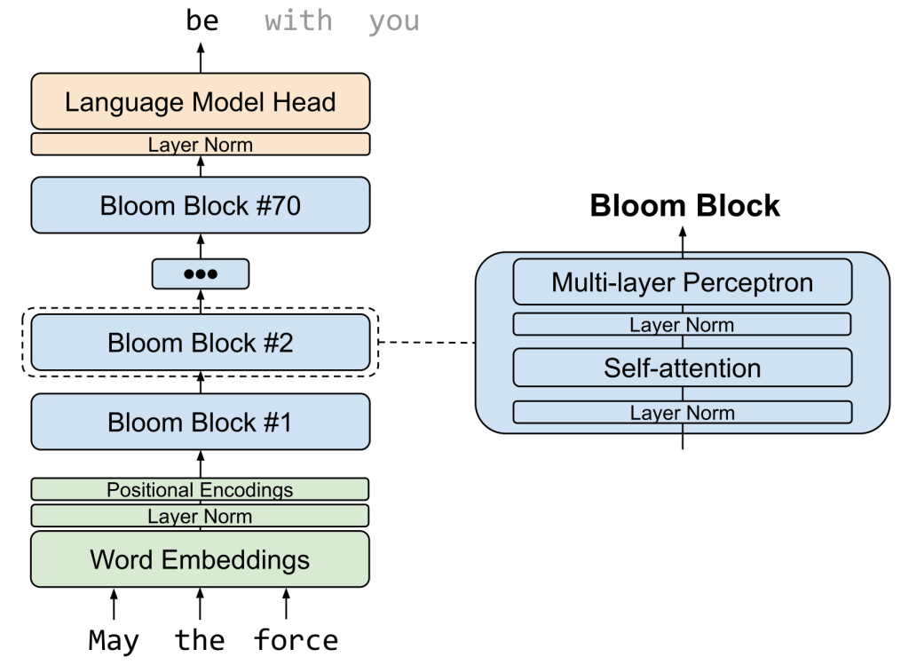
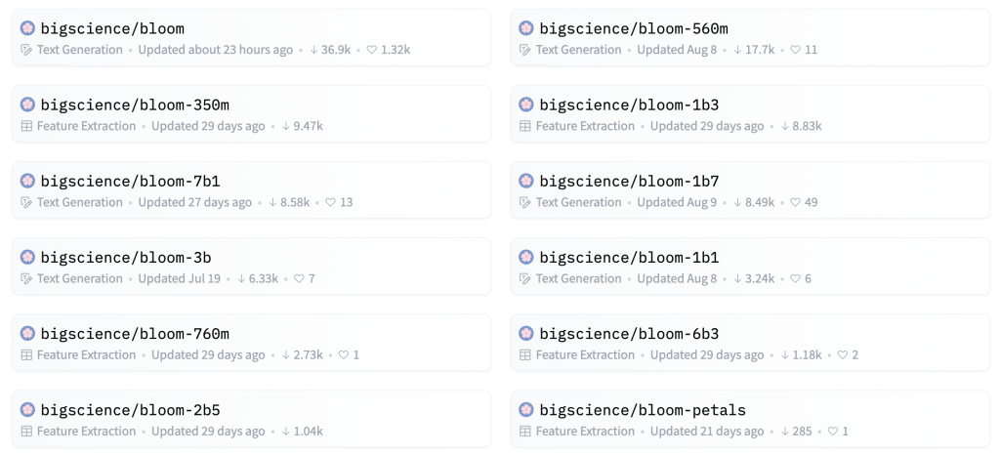

Bloom Examples
Contents
Bloom Examples#
Transparency, openness, and inclusivity#
While most major LLMs have been trained exclusively on English text, BLOOM’s training corpus includes 46 natural languages and 13 programming languages. This makes it useful for the many regions where English is not the main language.
BLOOM is also a break from the de facto reliance on big tech to train models. One of the main problems of LLMs is the prohibitive costs of training and tuning them. This hurdle has made 100-billion-parameter LLMs the exclusive domain of big tech companies with deep pockets. Recent years have seen AI labs gravitate toward big tech to gain access to subsidized cloud compute resources and fund their research.
The BLOOM research team has been completely transparent about the entire process of training the model. They have published the dataset, the meeting notes, discussions, and code, as well as the logs and technical details of training the model.
BLOOM Architecture#
BLOOM is a causal model language, which means that it was trained as a next-token predictor. This apparently simple strategy of predicting the next token in a sentence, based on a set of preceding tokens, has shown to capture certain degree of reasoning abilities for large language models (arXiv:2205.11916). This enables BLOOM and similar models to connect multiple concepts in a sentence and manage to solve non-trivial problems such as arithmetic, translation, and programming with fair accuracy. BLOOM uses a Transformer architecture composed of an input embeddings layer, 70 Transformer blocks, and an output language-modeling layer, as shown in the figure below. Each Transformer block has a self-attention layer and a multi-layer perceptron layer, with input and post-attention layer norms.
To predict the next token in a sentence using BLOOM, we simply need to sequentially pass the input tokens (in the form of embeddings) through each of 70 BLOOM blocks. Given that this is a sequential operation, we can load into RAM only one block at a time to avoid memory overflow. Similarly, the word embeddings and output language-modeling layer can be loaded on-demand from disk.

Pre-trained BLOOM checkpoints#
From BigScience repository (https://huggingface.co/bigscience), you can find various versions of the model.

Download checkpoints#
cf) The original bloom model is very big with a size of about 350GB.
!pip install transformers
from transformers import AutoModel, AutoTokenizer
model_path = "/workspace/data/tbts/archive/models/bloom/bloom" # replace with your local folder path
model_uri = "bigscience/bloom"
model = AutoModel.from_pretrained(model_uri)
model.save_pretrained(model_path)
tokenizer = AutoTokenizer.from_pretrained(model_uri)
tokenizer.save_pretrained(model_path)
!ls $model_path
Check file list and disk usage
model_path = "/workspace/data/tbts/archive/models/bloom" # replace with your local folder path
!du -h $model_path -d 2
657G /workspace/data/tbts/archive/models/bloom/bloom
6.5G /workspace/data/tbts/archive/models/bloom/bloom-1b3
664G /workspace/data/tbts/archive/models/bloom
Bloom local inference#
Load Bloom model and tokenizer.
from transformers import pipeline
model_uri = "bigscience/bloom-1b3"
pipe = pipeline(model=model_uri, task="text-generation", device=7)
2022-09-10 05:55:44.408738: I tensorflow/core/platform/cpu_feature_guard.cc:193] This TensorFlow binary is optimized with oneAPI Deep Neural Network Library (oneDNN) to use the following CPU instructions in performance-critical operations: AVX2 FMA
To enable them in other operations, rebuild TensorFlow with the appropriate compiler flags.
Inference function for bloom models
def infer_local(
prompt,
temperature=0.7,
top_k=None,
top_p=None,
max_new_tokens=50,
repetition_penalty=None,
do_sample=False,
num_return_sequences=1,
num_beams=None,
no_repeat_ngram_size=None,
early_stopping=False,
return_full_text=True,
):
response = pipe(
prompt,
temperature=temperature, # 0 to 1
top_k=top_k,
top_p=top_p, # None, 0-1
max_new_tokens=max_new_tokens, # up to 2047 theoretically
return_full_text=return_full_text, # include prompt or not.
repetition_penalty=repetition_penalty, # None, 0-100 (penalty for repeat tokens.
do_sample=do_sample, # True: use sampling, False: Greedy decoding.
num_return_sequences=num_return_sequences,
num_beams=num_beams,
no_repeat_ngram_size=no_repeat_ngram_size,
early_stopping=early_stopping,
)
return response
prompt = "Bloom is a large language model"
result_length = 100
result_length: the size of the response (in tokens) we get for the prompt from the model.inputs: the embedding representation of prompt, encoded for use specifically by PyTorch.
Greedy Search#
infer_local(prompt, temperature=None, max_new_tokens=result_length)
[{'generated_text': 'Bloom is a large language model that is used to predict the probability of a word given its context. The model is trained on a large corpus of text and is used to predict the probability of a word given its context. The model is trained on a large corpus of text and is used to predict the probability of a word given its context. The model is trained on a large corpus of text and is used to predict the probability of a word given its context. The model is trained on a large corpus of text and is used to'}]
Beam Search#
infer_local(prompt, temperature=None, max_new_tokens=result_length, num_beams=2, no_repeat_ngram_size=2, early_stopping=True)
[{'generated_text': 'Bloom is a large language model that is used to predict the probability of a word given its context. The model is trained on a corpus of about 1.5 million words. It is based on the idea that words that occur frequently in a text are likely to be important. For example, the word "apple" occurs in the corpus about 10 times, while the words "banana" and "orange" occur about 20 times each. This model has been shown to perform well in many NLP tasks, such as machine translation,'}]
Sampling Top-k + Top-p#
infer_local(
prompt,
temperature=None,
max_new_tokens=result_length,
do_sample=True,
top_k=50,
top_p=0.9,
)
[{'generated_text': 'Bloom is a large language model with the support of the most recent work on neural machine translation (Collobert et al., 2011; Dörfler et al., 2015; Le et al., 2015; Mikolov et al., 2014; Rusu et al., 2014). We apply a variant of the language model used for the MT task. In particular, we use a neural recurrent language model (Nirbakhsh et al., 2015) that is specifically tuned for language model generation, and trained with the GloVe'}]
Bloom api inference#
from huggingface_hub import notebook_login
from huggingface_hub import HfFolder
#enter your API key, you can make one for free on HF
notebook_login()
from huggingface_hub import InferenceApi
model_uri = "bigscience/bloom"
inference = InferenceApi(model_uri, token=HfFolder.get_token())
def infer_api(
prompt,
temperature=0.7,
top_k=None,
top_p=None,
max_new_tokens=50,
repetition_penalty=None,
do_sample=False,
num_return_sequences=1,
num_beams=None,
no_repeat_ngram_size=None,
early_stopping=False,
return_full_text=True,
seed=123,
):
top_k = None if top_k == 0 else top_k
top_p = None if num_beams else top_p
num_beams = None if num_beams == 0 else num_beams
no_repeat_ngram_size = None if num_beams is None else no_repeat_ngram_size
early_stopping = None if num_beams is None else num_beams > 0
params = {
"max_new_tokens": max_new_tokens,
"top_k": top_k,
"top_p": top_p,
"temperature": temperature,
"do_sample": do_sample,
"early_stopping":early_stopping,
"no_repeat_ngram_size":no_repeat_ngram_size,
"num_beams":num_beams,
"return_full_text":return_full_text,
"repetition_penalty": repetition_penalty,
"seed": seed,
}
response = inference(prompt, params=params)
return response
Greedy Search#
infer_api(prompt, temperature=None, max_new_tokens=result_length)
[{'generated_text': 'Bloom is a large language model that is trained on a large corpus of text. It is used to score the probability of a word given the previous words. The higher the score, the more likely the word is to be used in the context of the previous words. The model is trained on a large corpus of text, and the probability of a word is based on the frequency of the word in the corpus. The model is trained on a large corpus of text, and the probability of a word is based on the frequency of the'}]
Beam Search#
infer_api(prompt, temperature=None, max_new_tokens=result_length, num_beams=2, no_repeat_ngram_size=2, early_stopping=True)
[{'generated_text': 'Bloom is a large language model that is trained on a large corpus of text. It is a language model that is trained on a large corpus of text. It is a language model that is trained on a large corpus of text. It is a language model that is trained on a large corpus of text. It is a language model that is trained on a large corpus of text. It is a language model that is trained on a large corpus of text. It is a language model that is trained on a large corpus of text.'}]
Sampling Top-k + Top-p#
infer_api(
prompt,
temperature=None,
max_new_tokens=result_length,
do_sample=True,
top_k=50,
top_p=0.9,
)
[{'generated_text': 'Bloom is a large language model. It consists of millions of individual language model tokens, each with its own set of parameters that define the probability of each word in a sentence. A probability of 0.0 for a word implies that that word is never going to appear in a sentence, while a probability of 1.0 implies that that word will always be in a sentence. The goal is to learn these parameters in order to accurately predict the next word based on the previous word(s) in the sentence. To help train this'}]
prompt = "One of the hottest areas of investing in recent years has been ESG: "
prompt += "the use of environmental, social, and governance criteria to evaluate possible investments"
res = infer_api(
prompt,
temperature=None,
max_new_tokens=result_length,
do_sample=True,
top_k=100,
top_p=0.95,
)
print(res[0]["generated_text"])
One of the hottest areas of investing in recent years has been ESG: the use of environmental, social, and governance criteria to evaluate possible investments.
While environmental factors have long been a consideration, both socially responsible investing and corporate social responsibility have become an integral part of mainstream investing.
So, what does this mean for investors who believe strongly in the importance of ESG criteria to investment decisions?
The key point to remember is that every investment decision has to be made at the individual level, using the specific strategy for selecting investments. There are a number of ESG managers, ranging from the highly specialized, to those offering ESG at no
Translate with Bloom#
from ekorpkit import eKonf
from ekorpkit.models.bloom.demo import BloomDemo
hf_user_access_token = eKonf.osenv("HF_USER_ACCESS_TOKEN") # Set to your HF Access Token
demo = BloomDemo(model_uri="bigscience/bloom", device=6, hf_user_access_token=hf_user_access_token)
2022-09-10 06:04:10.733280: I tensorflow/core/platform/cpu_feature_guard.cc:193] This TensorFlow binary is optimized with oneAPI Deep Neural Network Library (oneDNN) to use the following CPU instructions in performance-critical operations: AVX2 FMA
To enable them in other operations, rebuild TensorFlow with the appropriate compiler flags.
INFO:ekorpkit.base:Loaded .env from /workspace/projects/ekorpkit-book/config/.env
INFO:ekorpkit.base:Loaded .env from /workspace/projects/ekorpkit-book/config/.env
demo.infer("Hello, how are you?")
>> Inference API initialized
'Hello, how are you? I can build a lightbox gallery for you. I am a professional developer having 6 years of experience in this field. I have already done such kind of projects. And I can assure you that you will be happy Flere\nHello, I have'
options = ["English", "Spanish", "French"]
from_lang = eKonf.create_dropdown(options, "English", "From Language")
to_lang = eKonf.create_dropdown(options, "Spanish", "To Language")
input_prompt = eKonf.create_textarea(
"I am a student",
"Input",
"Enter the sentence to translate",
style={"description_width": "50px"},
layout={"width": "95%", "height": "100px"},
)
generated_txt = eKonf.create_textarea(
"",
"Output",
"Translated sentence",
style={"description_width": "50px"},
layout={"width": "95%", "height": "100px"},
)
translate_button = eKonf.create_button("Translate")
def on_btn_click(btn):
generated_txt.value = "infering..."
input_text = input_prompt.value
prompt = f'Instruction: translate {from_lang.value} to {to_lang.value} \nInput: "{input_text}" \nOutput:'
res = demo.infer(
prompt,
temperature=None,
max_new_tokens=int(len(input_text) * 1.5),
do_sample=True,
top_k=100,
top_p=0.95,
)
generated_txt.value = res
translate_button.on_click(on_btn_click)
import ipywidgets as widgets
grid = widgets.GridspecLayout(4, 2, height="300px")
grid[0, 0] = from_lang
grid[0, 1] = to_lang
grid[1, :] = input_prompt
grid[2, :] = generated_txt
grid[3, 1] = translate_button
grid